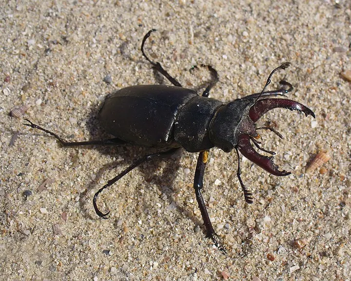

Hirschkäfer
Lucanus cervus
Insektenbis 8 cmdämmerungsaktiv
LaubwaldWaldrand & Lichtung
Größter Käfer Europas, das Männchen mit geweihartigen Kiefern. Im Juni fliegen die Männchen an warmen Abenden.
So erkennst du ihn
- Männchen mit rotbraunen, geweihartigen Oberkiefern
- Weibchen kleiner, ohne „Geweih“
- Schwarzer Kopf und Halsschild, braune Flügeldecken
- Spuren
- Saftfluss an Eichen, an dem sich Käfer sammeln
- Wo zu finden
- Alte Eichenwälder, Parks und Streuobstwiesen
- Größe
- Männchen bis 8 cm, Weibchen 3 bis 5 cm
- Aktiv
- dämmerungsaktiv
Wann im Jahr
kaum zu sehenaktivbeste Zeit
Aktiv: Mai, Juni und Juli. Hauptzeit: Juni.
Der Hirschkäfer ist von Mai bis Juli aktiv. Besonders gut zu beobachten im Juni. Im Juni fliegen die Männchen an warmen Abenden.
Lebensweise
Was frisst der Hirschkäfer?
Erwachsene Käfer lecken Baumsaft. Die Larven fressen fünf bis acht Jahre lang morsches Eichenholz im Boden.
Flugzeit
Die Käfer leben nur wenige Wochen im Frühsommer. In dieser Zeit suchen sie Partner.
Gut zu wissen
Die Männchen kämpfen mit ihren Kiefern um Weibchen, ernsthafte Verletzungen sind selten.
Rücksicht und Schutz
Alte Eichen und Baumstümpfe im Boden lassen. Im Garten kann ein Holzmeiler aus Eichenstämmen helfen.
Beobachtungstipp
An warmen Juniabenden an Waldrändern mit alten Eichen auf brummende Flieger achten.